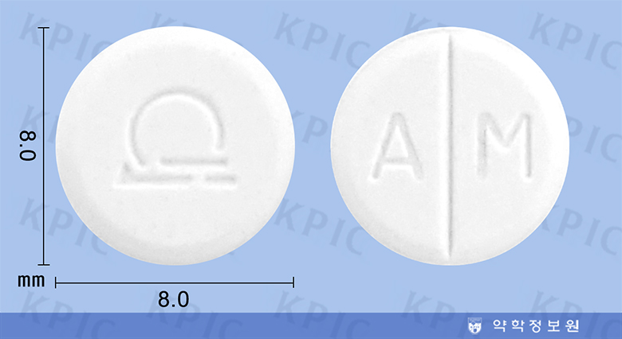

아미노필린
출처 : 약학정보원
효능 : 다음 질환의 기도폐쇄성장애에 의한 호흡곤란 등 여러 증상의 완화 : 기관지천식, 천식기관지염, 폐기종, 만성기관지염
용법/용량 : 성인 : 아미노필린수화물으로서 1일 300 ∼ 400 mg을 3 ∼ 4회 분할 경구투여한다.
부작용/주의사항 : 이 약의 독성을 감소시키기 위해 혈중농도를 확인하며 투여 용량을 조절한다. 혈중농도가 매우 높은 경우 중증의 이상반응(경련, 심실상성 빈맥)이 나타날 수 있다.